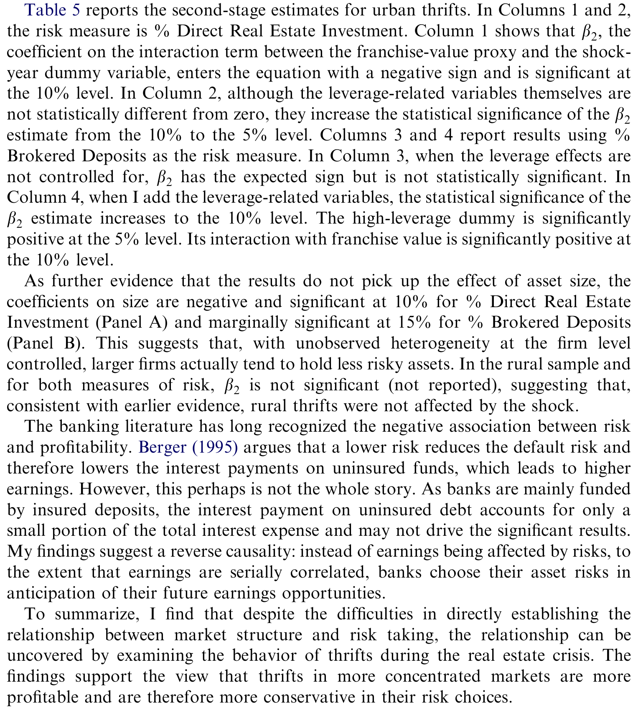
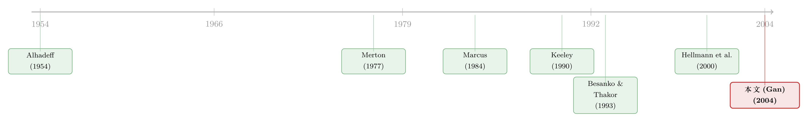

银行业的「集中」，为什么反而是一道稳定阀？——德州地产崩盘里的一场自然实验
本文读的是 Gan (2004, Journal of Financial Economics)：作者用 1980 年代德州地产崩盘做自然实验，验证了一条「市场结构 → 特许权价值 → 风险承担」的因果链——竞争越激烈，银行（这里是储贷机构）的特许权价值越低；而特许权价值一旦被外生冲击打到零，机构就会按「孤注一掷」(bang-bang) 的逻辑走向风险的两个极端。最干净的一招，是把识别从「斜率的水平」搬到「斜率的变化」上。
1 一个被反复念叨、却始终没被验证的故事
每一次金融危机过后，都会有人把矛头指向「竞争」。美国的储贷危机、东南亚的金融风暴，似乎前面都站着同一个影子：金融自由化放开了竞争，银行为了抢存款把利率抬上去，利润被磨薄，于是开始铤而走险。这个故事讲了太多遍，以至于它听上去像是常识。
可常识不等于证据。理论上，Hellmann、Murdock 和 Stiglitz (2000) 与 Allen 和 Gale (2000) 都明确建模过：竞争压低了银行的 特许权价值 (franchise value，即未来利润流的折现)，而特许权价值一低，再叠加一张 存款保险 (deposit insurance) 的兜底保单，风险转移 (risk-shifting) 的冲动就被放大了。Besanko 和 Thakor (1993) 从资产端（关系型贷款的价值）切入，得到的结论也一样。
但请注意：在这篇论文之前，没有任何实证证据直接把「银行业市场结构（竞争）」和「金融不稳定」连起来。跨国数据给过一些间接线索——Demirgüç-Kunt 和 Detragiache (1998) 发现金融自由化伴随着更低的银行利润；可 Barth、Caprio 和 Levine (2000) 却没找到「银行体系集中度」和「危机概率」之间的强关联。线索是矛盾的。
于是问题摆在台面上：竞争真的会喂养风险吗？这中间那条「特许权价值」的传导链，到底存不存在？这正是 Gan (2004) 要回答的。
2 为什么这件事这么难测？
接着，一个自然的问题是：既然故事这么经典，为什么过去几十年没人把它做实？
答案是——测不准。沿着 Keeley (1990) 的路子，学界其实做过不少「特许权价值 → 风险」的检验，但成果有限：Keeley (1990) 和 Demsetz、Saidenberg、Strahan (1996) 找到了负向关系；Galloway、Lee、Roden (1997) 与 Saunders 和 Wilson (1996) 却发现结论对样本期高度敏感；Gorton 和 Rosen (1995) 干脆发现资本充足的银行的风险选择，根本不符合特许权价值假说。
为什么这么乱？作者把困难拆成了几层，每一层都很要命：
第一，测量误差。 大家习惯用 托宾 Q (Tobin's Q，市值/账面资产) 当特许权价值的代理变量。但在银行业里，这个代理变量是「脏」的。把一家机构的总市值 \(MV\) 拆开看：
这里 \(A\) 是在位资产，\(G\) 是成长机会，\(P\) 是那张存款保险看跌期权（这是 Merton (1977) 最早点破的）。在位资产又能拆成账面价值 \(BV\) 加上租金 \(R\)。真正的「特许权价值」是 \(R+G\)。问题在于：一个高的 \(Q\)，既可能来自特许权价值 \(R+G\)，也可能来自政府担保 \(P\)——这就制造了测量误差。更糟的是，通常治测量误差的 工具变量法 (instrumental variable, IV)，在这里也救不了场：因为特许权价值与那张看跌期权的价值天然是负相关的，工具变量根本满足不了「与测量误差不相关」的前提。
第二，事后风险指标不反映「主动选择」。 不良贷款、股票收益波动率这些常用风险度量，经理人其实只有有限的控制力。更隐蔽的是「硬连线」问题：不良贷款会压低盈利和估值、从而压低 \(Q\)，于是「风险高、\(Q\) 低」这个相关性，可能压根不是特许权价值在起作用，而是会计恒等式自己导出来的。波动率也一样——低收益本就伴随高波动（所谓 不对称波动，French、Schwert 和 Stambaugh, 1987），而低收益又意味着低市值低 \(Q\)。
第三和第四，市场势力的来源、以及股东—经理的利益冲突。 银行的市场势力可能来自空间分布，也可能来自贷款关系中的「锁定效应」(lock-in)。Petersen 和 Rajan (1995) 指出，集中的信贷市场让银行更愿意给年轻、低质量的企业融资，因为日后能榨取垄断租金——这会削弱检验的统计功效。此外，若不控制内部人持股，估计也会有偏，可单家银行的内部持股数据通常拿不到。
四道坎叠在一起，难怪过去的结论像一团乱麻。
3 真正关键的一步：把识别从「斜率」搬到「斜率的变化」上
然后，论文给出了它最漂亮的一招。
作者引用了一支理论传统——Marcus (1984)、Suarez (1994)、Marshall 和 Venkataraman (1999) 以及 Gan (2003)：当银行在在位资产上赚不到租金（即 Eq. (1) 里的 \(R=0\)）时，它会采取「孤注一掷」(bang-bang) 策略。手里有很多正净现值项目的银行，会选择最低风险，安安稳稳爬出泥潭；而手里没什么好项目的银行，则会冲向最高风险，赌一把翻身（gamble for resurrection）。
这个二元选择带来一个可检验的几何含义：如果一个外生冲击抹平了所有银行的当期租金，那么风险对特许权价值的斜率会变得更陡、更负——高特许权价值的银行往下走（降风险），低特许权价值的银行往上冲（加风险）。

Table 5: reports the second-stage estimates for urban thrifts. In Columns 1 and 2
而这，恰恰是识别的钥匙。作者的原话值得咀嚼：
即便斜率的估计本身是有偏的，只要冲击前后的偏误幅度相近，斜率之差仍然是无偏的。
换句话说，前面那四道测量难题——只要它们在冲击前后大体稳定，就会在「做差」时被抵消掉。我们不再去问「斜率是多少」（那个数字脏），而去问「斜率变得更负了吗」（这个差干净）。把检验从水平搬到差分，这是全文识别的命门。
于是论文把假设拆成了一组：
- 假设 1：市场集中度越高，特许权价值越高。
- 假设 2：特许权价值越高，风险承担越少。它又被拆成三个子假设——2a 冲击后资产风险的分布变得更分散；2b 增加风险的倾向与特许权价值负相关；2c 冲击期间，风险与特许权价值的关系变得更负。
4 德州，恰好是上天造好的实验室
但要让「孤注一掷」的预测落地，你需要一个真正外生、又足够狠的冲击。德州 1980 年代的地产崩盘，简直是为这个理论量身定做的。
德州经济高度依赖石油：据 Horvitz (1990)，1980 年石油—采矿业占了全州实际总产值的 15% 以上；1985 年仅油气从价开采税就占了全州税收的 21%。1986 年 7 月油价崩盘，重创德州——石油—采矿业就业下降 44%，全州工业总就业下降 25%。雪上加霜的是 1986 年的《税收改革法案》(Tax Reform Act of 1986)，它砍掉了持有房地产的税收优惠，压低折旧扣除、限制用地产亏损冲抵其他应税收入、还抬高了资本利得税。
结果就是商业与住宅地产双双崩盘：据 White (1991)，西南地区写字楼价格在 1985—1987 年间跌了 30%；到 1987 年底，德州的住房许可数只剩 1984 年的四分之一；休斯顿的房价比 1984 年的水平低了 30% 以上，是自 1930 年代大萧条以来一个大都市区前所未有的跌幅。
这场冲击对储贷机构（thrifts，主业是住宅按揭贷款）几乎是定点打击：行业平均资产收益率 (ROA) 从 1984 年的 0.22% 直接掉到 1986 年的 -0.22%。租金被抹平——\(R \to 0\)，孤注一掷的开关被按下了。
为什么偏偏选储贷机构、而不是商业银行？作者讲了一连串理由，每一条都在提高检验的功效：住宅按揭很少有重复交易，所以市场势力主要来自空间分布而非锁定效应（锁定效应只会让结论更难找）；储贷的内部人持股显著高于商业银行（Esty, 1993），股东—经理冲突更小，缓解了缺数据的遗漏变量问题；按揭历来是地方生意，市场边界清晰；而且据 Strunk 和 Case (1988)，德州的州法是全美最宽松之一，几乎允许储贷想冒多大险就冒多大险——这又放大了检验功效。
5 怎么度量「风险」与「特许权价值」
作者用了两个事前 (ex ante)、且反映主动选择的风险指标，刻意绕开前面说的「事后指标」陷阱：
- 直接房地产投资占资产的比例（% Direct Real Estate Investment）。这是德州储贷「赌博」的典型方式（Barth, 1991; Horvitz, 1990）：它是股权性的（次级于贷款），象征着对高风险地产开发的意愿，而且这类土地与开发贷款往往是长期债权、与短期浮动利率存款错配，进一步放大利率风险。多项事后分析（如 Barth、Bartholomew 和 Bradley, 1989）都表明，直接地产投资与 1980 年代末的倒闭强相关。
- 经纪存款占资产的比例（brokered deposits）。经纪存款是通过中介在全国范围内归集、再大额打包投放的资金。据 1989 年 2 月 16 日《纽约时报》报道，即便在政府宣布救助方案后，德州储贷为经纪存款支付的利率仍比全国均值高出多达
150个基点。付高息意味着必须投向高收益、因而高风险的资产才能保本；这是一个市场决定的风险信号。
特许权价值这一侧，则交给前述两阶段回归来处理。
6 两阶段回归与那条因果链
识别的执行靠的是两阶段回归：第一阶段用市场集中度等变量预测特许权价值（这一步直接对应假设 1）；第二阶段把风险对这个预测出来的特许权价值回归（对应假设 2）。这样做的好处是双重的——既处理了特许权价值测量误差带来的内生性，又把「市场集中如何经由特许权价值抑制风险」这条链条显式地连了起来。
一个隐含前提是「市场结构外生」。作者坦承若盈利冲击会吸引进入，市场结构就可能内生。但他做了两点辩护：其一，他单独检验了德州储贷的市场结构决定因素，发现它几乎只由人口密度决定，反映的是监管者的牌照政策（这是个高度管制的行业）；其二，即便有内生性，由于市场集中度与误差项负相关，偏误方向是缩小集中度系数的绝对值——也就是说，这只会让结果更保守，而非更夸张。
最终的证据支持了整条链：市场集中度与特许权价值正相关（假设 1）；地产崩盘后，储贷确实采取了孤注一掷策略，增加风险的倾向与特许权价值负相关（假设 2b）；而且风险对特许权价值的斜率在冲击期间变得更负（假设 2c）。如表 5 所示，论文报告了城市储贷的第二阶段估计——把这些结果拼起来，结论是清楚的：一个更集中的市场结构，保住了特许权价值，从而增进了金融稳定。
（关于「集中 vs. 稳定」这件事并不是只有一种声音——异质性本身可能才是稳定器，可参见《异质性，反而是金融体系的「稳定器」？》；而竞争如何经由存款利率影响风险选择，也可对照《多发股本，银行就一定少放贷吗？》。）
7 文献脉络
把这条线索摊开看，会发现它是一砖一瓦垒起来的。
最早，Alhadeff (1954) 就在讨论银行业的垄断与竞争。真正给出「政府担保=看跌期权」这把钥匙的是 Merton (1977)——没有这一步，特许权价值的测量误差问题根本说不清。接着，Marcus (1984) 埋下了「孤注一掷」的种子：当银行赚不到租金，最优策略就是走极端。
而把「特许权价值约束风险」做成一个可检验命题的，是 Keeley (1990)——这之后才有了 Demsetz、Saidenberg 和 Strahan (1996)、Gorton 和 Rosen (1995)、Saunders 和 Wilson (1996) 等一连串（结论彼此打架的）后续。理论端，Besanko 和 Thakor (1993) 从资产端、Hellmann、Murdock 和 Stiglitz (2000) 与 Allen 和 Gale (2000) 从负债端，分别把「竞争→低特许权价值→道德风险」写成了模型。

Gan (2004) 的位置，就在这条链的「合龙处」：它第一次用一个干净的外生冲击，同时验证了链条的两端（市场结构→特许权价值，以及特许权价值→风险），并且用「斜率之差」这一招绕开了困扰前人二十年的测量难题。
8 评论与延伸（Q&A + 研究方向）
(a) 几个可能的疑问
Q：为什么不直接看风险对特许权价值的斜率，非要看斜率的「变化」？
因为水平上的斜率被四重问题污染了（托宾 Q 的测量误差、事后风险指标的硬连线、锁定效应、股东—经理冲突）。只要这些偏误在冲击前后大体稳定，做差就能把它们抵消——这正是 Galloway et al. (1997)、Saunders 和 Wilson (1996) 那些「结论对样本期敏感」的检验所缺的纪律。
Q：用德州储贷而不用全美商业银行，是不是为了「挑」一个好看的样本？
更准确地说，是为了提高功效、缩小遗漏变量。住宅按揭少有重复交易（弱化锁定效应）、储贷内部持股高（弱化股东—经理冲突）、市场边界清晰、州法又极宽松（允许真的去冒险）。这些不是为了好看，而是让理论预测能被干净地观测到。代价是外部有效性——结论能否外推到商业银行、外推到别的州，是另一回事。
Q：把市场结构当外生，真的站得住吗？盈利好不是会吸引新机构进入吗？
作者的两点辩护是关键：一是德州储贷的市场结构几乎只由人口密度（监管牌照政策）决定；二是即便有内生性，偏误方向也是保守的（缩小集中度系数）。所以这不是一个被忽略的漏洞，而是一个被论证为「只会让我低估效应」的问题。
Q：「孤注一掷」预测的是二元选择（最高或最低风险），可现实中斜率是连续的，这不矛盾吗？
不矛盾。理论预测的是斜率变陡变负，而非每家机构都精确跳到端点。作者明确说这是「充分而非必要」条件：只要在选择降险的高特许权机构里、和选择加险的低特许权机构里，能力差异没有大到压倒激励差异，斜率就会更负。能力（资产流动性、融资速度）是个约束，但不必假设它跨机构相同。
Q：这篇的结论是「集中=稳定」，可后来的危机里，「大到不能倒」的集中银行反而成了系统性风险源，怎么调和？
两者其实在讲不同的机制。本文讲的是特许权价值渠道：集中→高租金→珍惜牌照→少冒险。而「大到不能倒」讲的是隐性担保渠道：集中可能强化政府救助预期，反而鼓励冒险。同一个「集中度」，可以同时拉动两条方向相反的力。本文的设定（高度管制、地方市场、无系统重要性机构）恰好把第二条力压到了最小。
Q：直接地产投资和经纪存款，会不会本身就是「被冲击逼出来的」，而非主动加险？
作者特意挑了事前指标：经理人在做这两件事时，应当清楚自己在主动承担风险（地产开发投资是股权性、长期、错配的）。而且经纪存款的利率是市场决定的——愿意把利率抬到全国均值之上 150 个基点，本身就是冒险意愿的市场化信号。这正是为了避开不良贷款、波动率那类「被动」指标的硬连线问题。
(b) 几个可能的研究问题与提案
1. 把「斜率之差」搬到公司债市场。 【经济故事】本文的核心方法论——用一个外生冲击，检验「风险对某个估值变量的斜率是否变陡」——并不限于储贷。在公司债里，可以问：当一个行业被外生冲击（如油价崩盘、关税、技术替代）打到现金流归零时，发行人「赌一把翻身」的发债/投资行为，对其特许权价值（成长机会）的斜率是否变得更负？ 【可行性】中。需要 TRACE 成交数据 + Compustat 基本面 + 一个干净的行业级外生冲击；识别上可借鉴本文的「差分斜率」逻辑。难点在于公司债发行人的「孤注一掷」不像储贷那样有存款保险兜底，机制需要重新论证。
2. 外资持有人是「稳定器」还是「放大器」？ 【经济故事】本文强调本地、清晰的市场边界。一个自然延伸是：当持有人结构里外资比例上升时，冲击下的「孤注一掷」行为会被放大还是抑制？外资可能更快撤离（放大），也可能因分散而更耐受（抑制）。 【可行性】中。需要债券或机构层面的持有人国籍数据（如 eMAXX、各国监管申报）；识别可借助指数纳入或资本账户开放这类外生事件。诚实地说，把「持有人国籍」与「冒险行为」之间的因果分离开来并不容易。
3. 流动性枯竭与特许权价值的交互。 【经济故事】本文的风险指标之一是经纪存款——本质是一种「不稳定的批发融资」。当市场流动性枯竭时，低特许权价值机构对批发融资的依赖会不会进一步抬升其孤注一掷的倾向？这把「特许权价值渠道」和「流动性渠道」接到了一起。 【可行性】高。COVID-19 期间的公司债流动性危机提供了现成的外生冲击与丰富数据（可对照《差点死掉的那个市场：一场公司债流动性危机的微观解剖》）；难点在于把「特许权价值」在非银机构上重新定义。
4. 用现代交错双重差分重估这场实验。 【经济故事】本文本质上是一个「冲击前后 × 高/低特许权价值」的差分设计。近年关于交错处理与异质处理效应的方法论进展，可能改变对斜率变化幅度的推断。 【可行性】高。数据是历史储贷监管申报（Thrift Financial Reports），公开可得；方法上可直接套用稳健 DiD 工具（这类「方法换了符号就翻案」的故事并不罕见，可参见《当「更稳健」的设计悄悄把符号弄反了——重读交错双重差分》）。
9 我的判断
这篇论文最值得学的，不是它的结论（「集中→稳定」在今天看来甚至有点反直觉），而是它的识别哲学。当一个变量（特许权价值）注定测不准、当事后风险指标注定被会计恒等式污染，作者没有去硬造一个更好的代理变量，而是退一步，把检验对象从「斜率」换成「斜率的变化」，让那些顽固的偏误在做差时自己消掉。这是一种很高级的「认输式」识别——承认水平测不准，转而去赌差分可信。
但担忧也正在这里。第一，「偏误在冲击前后稳定」是一个无法直接检验的前提。地产崩盘本身就可能改变托宾 Q 的测量误差结构（比如那张存款保险看跌期权的价值在冲击后暴涨），那么斜率之差就不再无偏。第二，外部有效性：高度管制、地方化、无系统重要性机构、内部持股高——这套让检验「干净」的特征，恰恰让结论很难外推到今天的大型综合银行；而后续危机里「大到不能倒」对冒险的鼓励，正好是本文设定里被屏蔽掉的那条相反的力。第三，风险只用了两个指标，且都偏向地产与批发融资这条线，利率风险、表外风险等并未充分纳入。
后续我最想看到的，是有人把这套「差分斜率」的招数，搬到一个持有人结构可观测、流动性冲击可外生的现代信用市场里去——看看「特许权价值渠道」在没有存款保险兜底、却有火线甩卖压力的环境下，到底是被放大还是被驯服。那将是对 Gan (2004) 这条因果链最有意思的一次压力测试。
参考文献
- Alhadeff, D. (1954). Monopoly and Competition in Banking. University of California Press, Berkeley.
- Allen, F., Gale, D. (2000). Comparing Financial Systems. MIT Press, Cambridge, MA.
- Barth, J., Bartholomew, P., Bradley, M. (1989). Reforming federal deposit insurance: what can be learned from private insurance practices? Research Paper No. 161, Federal Home Loan Bank Board.
- Barth, J., Caprio, G., Levine, R. (2000). Bank regulation and supervision: what works and what doesn't. Working Paper, World Bank.
- Besanko, D., Thakor, A. (1993). Relationship banking, deposit insurance and bank portfolio choice. In: Mayer, C., Vives, X. (Eds.), Capital Markets and Financial Intermediation. Cambridge University Press.
- Demirgüç-Kunt, A., Detragiache, E. (1998). Financial liberalization and financial fragility. Annual World Bank Conference on Development Economics.
- Demsetz, R., Saidenberg, M., Strahan, P. (1996). Banks with something to lose: the disciplinary role of franchise value. Federal Reserve Bank of New York Economic Policy Review, 1–14.
- Gan, J. (2004). Banking market structure and financial stability: evidence from the Texas real estate crisis in the 1980s. Journal of Financial Economics 73(3), 567–601.
- Gorton, G., Rosen, R. (1995). Corporate control, portfolio choice, and the decline of banking. Journal of Finance 50(5), 1377–1420.
- Hellmann, T., Murdock, K., Stiglitz, J. (2000). Liberalization, moral hazard in banking, and prudential regulation: are capital requirements enough? American Economic Review 90(1), 147–165.
- Keeley, M. (1990). Deposit insurance, risk, and market power in banking. American Economic Review 80(5), 1183–1200.
- Marcus, A. (1984). Deregulation and bank financial policy. Journal of Banking and Finance 8(4), 557–565.
- Merton, R. (1977). An analytic derivation of the cost of capital of deposit insurance and loan guarantees: an application of modern option pricing theory. Journal of Banking and Finance 1(1), 3–11.
- Petersen, M., Rajan, R. (1995). The effect of credit market competition on lending relationships. Quarterly Journal of Economics 110(2), 407–443.
- Saunders, A., Wilson, B. (1996). Bank capital structure: charter value and diversification effects. Working Paper S-96-52, New York University, Salomon Center.
- White, L. (1991). The S&L Debacle. Oxford University Press, New York.